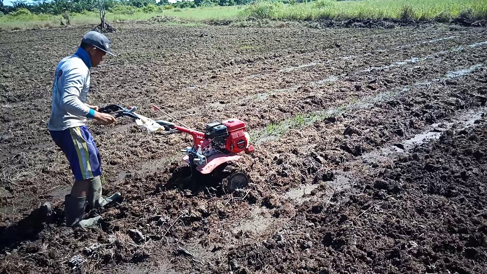
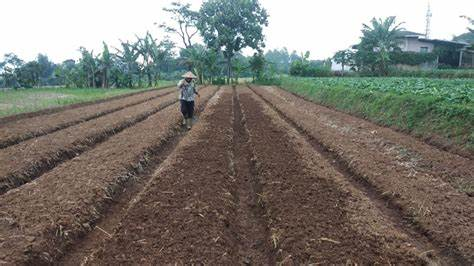
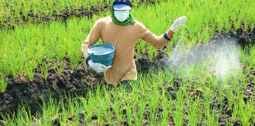

Langkah-langkah perawatan tanah
Mohammad Zainal Fuad
12/01/2022
1. Tanah harus dibajak
Pembajakan tanah dapat dilakukan dengan menggunakan alat bajak tradisional yang ditarik dengan hewan atau mesin traktor yang mampu membalikkan lapisan sub-soil menjadi lapisan top-soil yang subur Mungkin sebagian besar orang awam masih kurang paham dengan instruksi pembajakan tanah yang akan digunakan untuk bercocok tanam. Sebenarnya, pembajakan bukan tidak beralasan, malah proses ini terbilang penting karena dapat menentukan keberhasilan. Pada dasarnya, tanah dibajak untuk membalikkan tanah sehingga bagian bawah tertarik ke atas. Area lahan yang sudah dibajak akan menghasilkan bongkahan tanah yang terbilang besar. Kondisi tersebut harus dibiarkan selama beberapa hari agar tanah terkena matahari dan air hujan. Proses ini membutuhkan waktu minimal satu minggu. Proses bajak tanah juga bisa dilakukan dengan cangkul apabila Anda tidak memiliki mesin traktor dan luasan tanah yang dibajak tidak terlalu besar. Pencangkulan tanam dilakukan hingga sedalam 20—30 cm.Pembajakan tanah juga berfungsi untuk membersihkan serta menghambat pertumbuhan gulma. Gulma akan menjadi pesaing dari tanaman komoditas yang ditanam sehingga nutrisi yang tersedia di dalam tanah tidak bisa dimanfaatkan secara maksimal oleh tanaman. Tanah bekas bajakan sengaja dibiarkan agar zat berbahaya serta pathogen yang selama ini bersemayam di dalam tanah menguap dan mati karena sinar matahari. Ada beberapa jenis hama yang menyembunyikan diri atau meletakkan pupanya di dalam tanah. Jika tanah tidak dibalik, hama tersebut nantinya akan menyerang tanaman yang Anda tanam. Langkah selanjutnya ialah pembuatan saluran drainase atau membangun bedengan untuk mempermudah proses perawatan tanaman. Saluran drainase berfungsi melancarkan peredaran air di lahan sehingga tidak ada air yang menggenang di permukaan tanah. Setelah selesai dibajak, tanah digemburkan dengan menggunakan garu atau cangkul sedalam 20 cm dan dilakukan secara merata. Proses ini bertujuan menghaluskan bongkahan tanah yang masih besar agar menghasilkan butiran tanah yang lebih kecil dan lebih mudah digunakan untuk menanam. Tekstur tanah yang bagus akan memperlancar siklus udara di dalam tanah.
2. Dicangkul

Tanah harus dicangkul dan dibentuk seperti gambar diatas agar gunanya untuk memper mudah tanaman untuk mengatur perairan. Karna bila musim hujan ada genangan air tinggi dan ladon bisa disesuaikan ketinggianya sehingga tanaman tidak tergenang oleh air, dan bila musim kemarau tanaman akan diberi ladon rendah untuk mempermudah akar tanaman mencari sumber minral. Banyak lagi keggunaan dari ladon seperti diatas, termasuk petani mudah untuk merawat tanaman dan mengecek tanaman dari penyakit.
3. Dipupuk
Manfaat Pupuk Organik Bagi Tanaman Dan Fungsi Unsur Hara Makro. Berbagai hasil penelitian menunjukkan bahwa sebagian besar lahan pertanian intensif telah menurunkan produktivitas dan telah mengalami degradasi lahan, terutama terkait dengan kandungan karbon organik yang sangat rendah di tanah, yaitu 2%. Padahal untuk mendapatkan produktivitas optimal, karbon organik dibutuhkan sekitar 2,5%. Pupuk organik sangat berguna untuk meningkatkan produksi pertanian baik secara kualitas maupun kuantitas, mengurangi polusi lingkungan, dan meningkatkan kualitas tanah secara berkelanjutan. Penggunaan pupuk organik dalam jangka panjang dapat meningkatkan produktivitas lahan dan dapat mencegah degradasi lahan.
4. Mem-pupuk waktu ada tanaman
Biasanya tanah dipupuk 3 kali, yaitu, sebelum ditanami , satu minggu setelah ditanami, dan pada umur satu bulan. Gunanya untuk menjaga kesuburan tanah agar tetap subur dan menghasilkan PO yang diharapkan